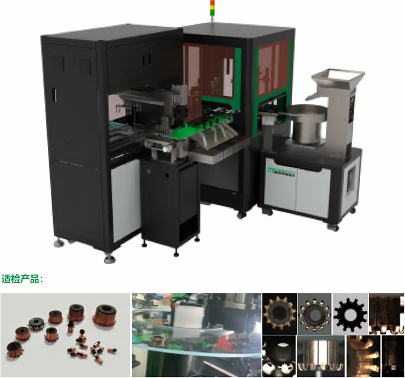
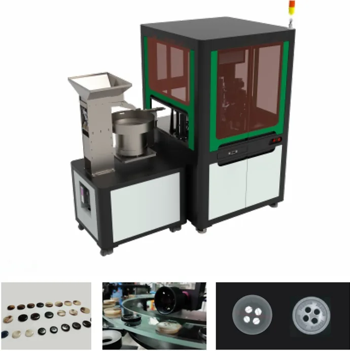

비전 선별기

Mic- SXT
카메라 모듈 비전 검사 장비• 다방면 지능형 검사: 제품 외관 결함 선별과 고정밀 치수 측정을 전자동으로 수행하며 수작업 개입 없이 검사 효율과 일관성을 모두 확보합니다.
• 다품종에 유연하게 대응: 단일 장비로 여러 제품을 검사할 수 있으며 자주 지그를 교체할 필요가 없어 생산 라인 전환 비용을 절감하고 다배치·소량 생산 요구 사항에 대응합니다.• 360° 다각도 검사: 타이밍 풀리 구동 기술을 사용하여 제품 내외벽을 전방위로 스캔하고 미세 결함을 정밀하게 식별하여 검출 누락 감소에 기여합니다.• 고속·고정밀 검사: 검사 속도는 최고 60개/분으로 생산 효율을 확보하며, 검사 정도는 0.0007 mm에 도달하여 초정밀 제조의 엄격한 요구 사항을 충족합니다.• 지능형 자동 분류: 양품은 자동으로 배출하여 포장 공정과 연결하고 불량품은 후크, 동 버스바, 베이클라이트, 슬롯 등 결함 유형별로 정밀 분류하여 검사-분류 통합 공정을 구현합니다.
• 다방면 지능형 검사: 제품 외관 결함 선별과 고정밀 치수 측정을 전자동으로 수행하며 수작업 개입 없이 검사 효율과 일관성을 모두 확보합니다.
Mic- DJ
모터 부품 비전 품질 검사 장비• 생산 라인 연계 핵심 장비: 생산과 품질 관리를 연결하여 전후 공정을 매끄럽게 연계하고 품질 검사 프로세스의 지능형 순환 관리를 구현합니다.
• 전자동 정밀 검사: 원클릭 시작으로 제품 외관 결함 선별과 치수 정밀도 측정을 수행하며 전 과정에 수작업 개입이 필요 없어 안정적이고 신뢰할 수 있는 검사 결과를 제공합니다.• 다품종에 유연하게 대응: 단일 장비로 여러 제품을 검사할 수 있으며 자주 지그를 조정할 필요가 없어 다규격·다배치 생산에 대응하고 모델 전환 비용을 절감합니다.• 360° 다각도 스캔: 서보 회전 구동 기술로 제품을 안정적으로 회전시켜 외벽을 다각도로 전방위로 검사하고 미세 결함을 식별합니다.• 고속·고정밀 동시 확보: 검사 속도는 최고 400개/분으로 양산 속도에 대응하며, 검사 정도는 0.001 mm에 도달하여 정밀 제조의 엄격한 품질 관리 요구 사항을 충족합니다.• 지능형 분류 및 효율적 배출: 양품은 자동으로 배출하여 포장 공정과 연결하고 불량품은 후크, 동 버스바, 베이클라이트, 슬롯 등 결함 유형별로 정밀 분류하여 후속 재작업 효율을 높입니다.
• 생산 라인 연계 핵심 장비: 생산과 품질 관리를 연결하여 전후 공정을 매끄럽게 연계하고 품질 검사 프로세스의 지능형 순환 관리를 구현합니다.


Mic- CC
자성 소재 비전 검사 장비• 전자동 지능형 검사: 원클릭 시작으로 제품 외관 결함 선별과 치수 정밀도 측정을 수행하며 전 과정에 수작업 개입이 필요 없어 안정적이고 일관된 검사 결과를 제공합니다.
• 다품종에 유연하게 대응: 단일 장비로 여러 제품을 검사할 수 있으며 자주 지그를 교체하거나 파라미터를 조정할 필요가 없어 다규격·소량 생산에 유연하게 대응합니다.• 360° 전방위 다각도 검사: 타이밍 풀리 구동 기술로 제품을 안정적으로 회전시켜 내외벽을 전방위로 스캔하고 미세 결함을 정밀하게 식별합니다.• 고효율·고정밀 동시 확보: 검사 속도는 최고 8000개/분으로 대규모 양산 속도에 대응하며, 검사 정도는 0.001 mm에 도달하여 정밀 제조의 엄격한 품질 관리 기준을 충족합니다.• 지능형 분류 및 효율적 배출: 양품은 자동으로 배출하여 포장 공정과 연결하고 불량품은 후크, 동 버스바, 베이클라이트, 슬롯 등 결함 유형별로 정밀 분류하여 검사-분류 통합 순환 공정을 구현합니다.
• 전자동 지능형 검사: 원클릭 시작으로 제품 외관 결함 선별과 치수 정밀도 측정을 수행하며 전 과정에 수작업 개입이 필요 없어 안정적이고 일관된 검사 결과를 제공합니다.
Mic- NK
버튼 비전 검사 장비• 전자동 통합 검사: 전 과정에 수작업 개입 없이 제품 외관 결함 선별과 치수 정밀도 측정을 정밀하게 수행하여 검사 결과의 안정성과 일관성을 확보합니다.
• 다품종에 유연하게 대응: 단일 장비로 여러 제품의 검사에 대응하며 자주 지그를 교체하거나 파라미터를 조정할 필요가 없어 다규격 생산 요구 사항을 충족하고 생산 라인 전환 비용을 절감합니다.• 360° 외벽 다각도 검사: 전용 특수 공정을 적용하여 제품 외벽을 전방위로 스캔하고 미세 결함을 정밀하게 식별하여 검출 누락 위험 감소에 기여합니다.
• 고속·고정밀 동시 확보: 검사 속도는 최고 400개/분으로 양산 속도에 대응하며, 검사 정도는 0.001 mm에 도달하여 정밀 제조의 엄격한 품질 관리 기준을 충족합니다.
• 지능형 분류 및 효율적 배출: 양품은 자동으로 배출하여 포장 공정과 연결하고 불량품은 후크, 동 버스바, 베이클라이트, 슬롯 등 결함 유형별로 정밀 분류하여 검사-분류 순환 관리를 구현합니다.
• 전자동 통합 검사: 전 과정에 수작업 개입 없이 제품 외관 결함 선별과 치수 정밀도 측정을 정밀하게 수행하여 검사 결과의 안정성과 일관성을 확보합니다.
• 고속·고정밀 동시 확보: 검사 속도는 최고 400개/분으로 양산 속도에 대응하며, 검사 정도는 0.001 mm에 도달하여 정밀 제조의 엄격한 품질 관리 기준을 충족합니다.
• 지능형 분류 및 효율적 배출: 양품은 자동으로 배출하여 포장 공정과 연결하고 불량품은 후크, 동 버스바, 베이클라이트, 슬롯 등 결함 유형별로 정밀 분류하여 검사-분류 순환 관리를 구현합니다.


Mic-GJ
실리콘·플라스틱 시리즈 비전 품질 검사 장비• 자체 개발 공급 기술 적용: 자체 개발한 제품 공급 시스템을 탑재하여 안정적이고 정밀하며 효율적인 공급을 보장하고 공급 단계부터 검사 프로세스의 신뢰성을 높입니다.
• 전자동 통합 검사: 전 과정에 수작업 개입이 필요 없으며 원클릭으로 제품 외관 결함 선별과 치수 정밀도 측정을 수행하여 안정적이고 일관된 검사 결과를 제공합니다.• 다품종에 유연하게 대응: 단일 장비로 여러 제품의 검사에 대응하며 자주 지그를 교체하거나 파라미터를 조정할 필요가 없어 생산 라인 전환 비용을 절감하고 다규격 생산 요구 사항을 충족합니다.• 상하면 다각도 검사: 전용 특수 공정을 통합하여 제품 상하면을 전방위로 스캔하고 미세 결함을 정밀하게 식별하여 검출 누락 감소에 기여합니다.• 고속·고정밀 동시 확보: 검사 속도는 최고 400개/분으로 양산 속도에 대응하며, 검사 정도는 0.001 mm에 도달하여 정밀 제조의 엄격한 품질 관리 기준을 충족합니다.• 지능형 분류 순환 관리: 양품은 자동으로 배출하여 포장 공정과 연결하고 불량품은 후크, 동 버스바, 베이클라이트, 슬롯 등 결함 유형별로 정밀 분류하여 후속 재작업 효율을 높입니다.
• 자체 개발 공급 기술 적용: 자체 개발한 제품 공급 시스템을 탑재하여 안정적이고 정밀하며 효율적인 공급을 보장하고 공급 단계부터 검사 프로세스의 신뢰성을 높입니다.
Mic-JS
금속 제품 비전 품질 검사 장비• 전용 소프트웨어를 이용한 미세 결함 정밀 식별: 맞춤형 검사 소프트웨어를 탑재하여 제품의 미세 결함을 정밀하게 포착하고 기존 검사에서 발생하기 쉬운 검출 누락 감소에 기여합니다.
• 전자동 통합 검사: 전 과정에 수작업 개입이 필요 없으며 원클릭으로 제품 외관 결함 선별과 치수 정밀도 측정을 수행하여 안정적이고 신뢰할 수 있는 검사 결과를 제공합니다.• 다품종에 유연하게 대응: 단일 장비로 여러 제품을 검사할 수 있으며 자주 지그를 교체하거나 파라미터를 조정할 필요가 없어 다규격 생산 요구 사항을 충족하고 생산 라인 전환 비용을 절감합니다.• 표면 검사용 특수 조명 시스템: 맞춤형 조명 조합을 사용하여 제품 표면 결함의 식별성을 높이고 미세 결함을 검출합니다.• 고속·고정밀 동시 확보: 검사 속도는 최고 300개/분으로 양산 속도에 대응하며, 검사 정도는 0.001 mm에 도달하여 정밀 제조의 엄격한 품질 관리 기준을 충족합니다.• 지능형 분류 순환 관리: 양품은 자동으로 배출하여 포장 공정과 연결하고 불량품은 후크, 동 버스바, 베이클라이트, 슬롯 등 결함 유형별로 정밀 분류하여 후속 재작업 효율을 높입니다.
• 전용 소프트웨어를 이용한 미세 결함 정밀 식별: 맞춤형 검사 소프트웨어를 탑재하여 제품의 미세 결함을 정밀하게 포착하고 기존 검사에서 발생하기 쉬운 검출 누락 감소에 기여합니다.

Mic- HXQ
커뮤테이터 비전 품질 검사 장비• 에어 소비가 없는 에너지 절약 설계: 공압 부품을 사용하지 않아 전 과정에 에어가 필요 없으며 장비 운전 비용과 에너지 소비를 절감하여 친환경 생산 요구 사항에 대응합니다.
• 전자동 통합 검사: 전 과정에 수작업 개입이 필요 없으며 원클릭으로 제품 외관 결함 선별과 치수 정밀도 측정을 수행하여 안정적이고 일관된 검사 결과를 제공합니다.
• 다품종에 유연하게 대응: 단일 장비로 여러 제품을 검사할 수 있으며 자주 지그를 교체하거나 파라미터를 조정할 필요가 없어 생산 라인 전환 비용을 절감하고 다규격 생산에 대응합니다.
• 360° 내외벽 다각도 검사: 타이밍 풀리 구동 기술로 제품을 안정적으로 회전시켜 내외벽을 전방위로 스캔하고 미세 결함을 정밀하게 식별합니다.
• 고속·고정밀 동시 확보: 검사 속도는 최고 400개/분으로 양산 속도에 대응하며, 검사 정도는 0.001 mm에 도달하여 정밀 제조의 엄격한 품질 관리 기준을 충족합니다.
• 지능형 분류 및 효율적 배출: 양품은 자동으로 배출하여 포장 공정과 연결하고 불량품은 후크, 동 버스바, 베이클라이트, 슬롯 등 결함 유형별로 정밀 분류하여 검사-분류 통합 순환 공정을 구현합니다.
• 에어 소비가 없는 에너지 절약 설계: 공압 부품을 사용하지 않아 전 과정에 에어가 필요 없으며 장비 운전 비용과 에너지 소비를 절감하여 친환경 생산 요구 사항에 대응합니다.
• 전자동 통합 검사: 전 과정에 수작업 개입이 필요 없으며 원클릭으로 제품 외관 결함 선별과 치수 정밀도 측정을 수행하여 안정적이고 일관된 검사 결과를 제공합니다.
• 다품종에 유연하게 대응: 단일 장비로 여러 제품을 검사할 수 있으며 자주 지그를 교체하거나 파라미터를 조정할 필요가 없어 생산 라인 전환 비용을 절감하고 다규격 생산에 대응합니다.
• 360° 내외벽 다각도 검사: 타이밍 풀리 구동 기술로 제품을 안정적으로 회전시켜 내외벽을 전방위로 스캔하고 미세 결함을 정밀하게 식별합니다.
• 고속·고정밀 동시 확보: 검사 속도는 최고 400개/분으로 양산 속도에 대응하며, 검사 정도는 0.001 mm에 도달하여 정밀 제조의 엄격한 품질 관리 기준을 충족합니다.
• 지능형 분류 및 효율적 배출: 양품은 자동으로 배출하여 포장 공정과 연결하고 불량품은 후크, 동 버스바, 베이클라이트, 슬롯 등 결함 유형별로 정밀 분류하여 검사-분류 통합 순환 공정을 구현합니다.